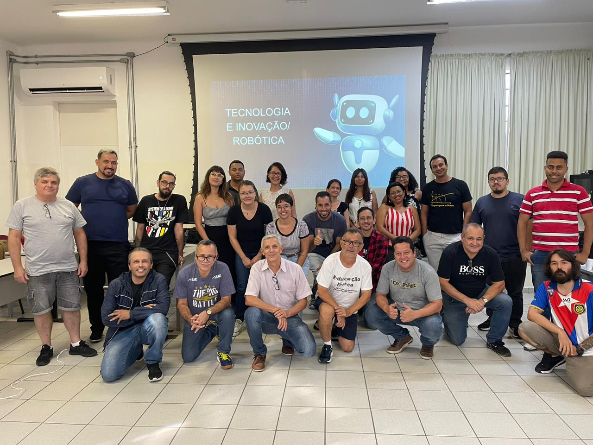
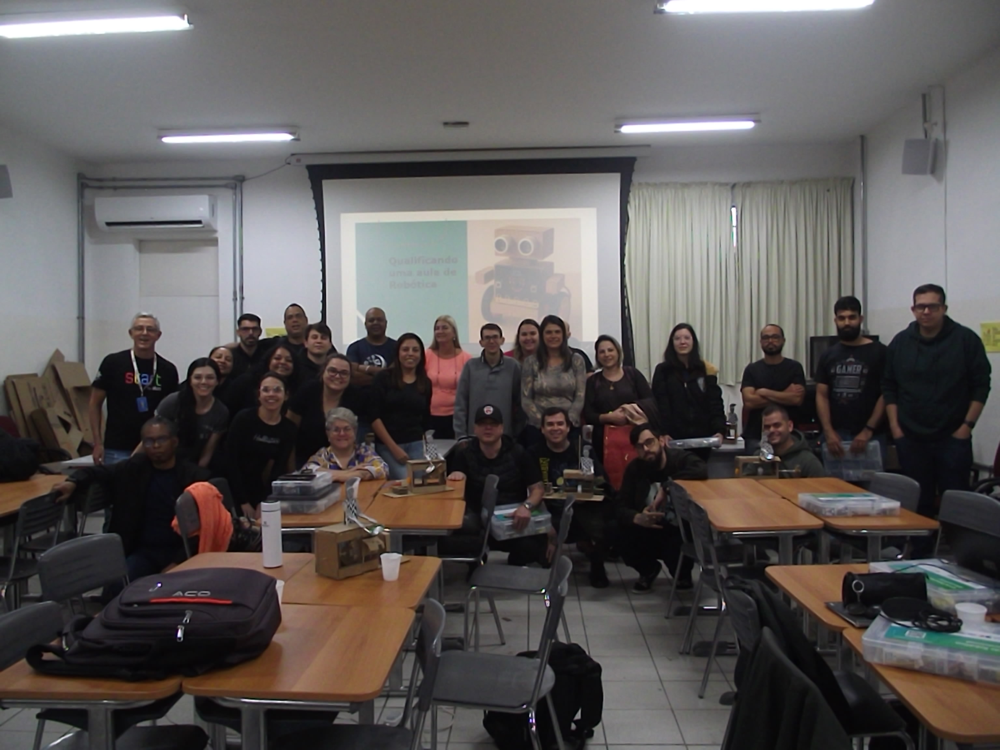

Minhas Formações

1ª Formação 2024
Formação para os professores de Tecnologia

Formação Robótica 2025
Formação para os professores de Robótica do Ensino Fundamental e Médio.

Minha trajetória na Alura
Sobre minhas formações realizadas da Alura na EFAPE e dentro da plataforma.